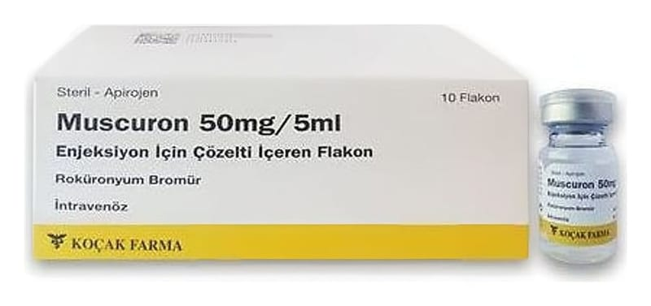

Muscuron 50 mg/5 ml Enjeksiyon İçin Çözelti İçeren Flakon ,5 Flakon

Ne için kullanılır
KT · Bölüm 1MUSCURON, kas gevşeticileri olarak bilinen bir ilaç grubunun üyesidir. Kas gevşeticiler, genel anestezinin bir bölümü olarak ameliyat sırasında kullanılır. Ameliyat olurken, kaslarınızın tamamen gevşemesi gerekir; bu sayede cerrah, ameliyatı daha kolay
gerçekleştirir. Normalde sinirler, taşıdıkları mesajları kaslara, impulslar şeklinde iletir. MUSCURON bu impulsları bloke ettiğinden, kaslar gevşer. Bu sırada solunumda kullanılan kaslarımız da gevşediğinden; ameliyat sırasında ve sonrasında, kendi başınıza solunum yapıncaya kadar solunumunuza yardım edilmesi gerekir (yapay solunum). Kas gevşeticisinin etkisi, ameliyat sırasında sürekli kontrol edilir ve gerekirse, biraz daha kas gevşetici verilir. Ameliyatın sonunda, MUSCURON'un etkisinin ortadan kalkmasına izin verilir ve kendi başınıza solunum yapmaya başlarsınız. Bunu hızlandırmak için bazen, başka bir ilaç daha verilir. MUSCURON ayrıca Yoğun Bakım Birimi'nde, kasları gevşek durumda tutmak amacıyla kullanılır.